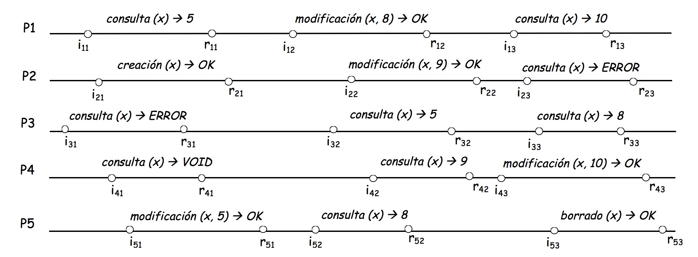

Part 3. Replicate to increase reliability¶
We can imagine that a cloud service, like the one we intend to develop, is replicated to guarantee the reliability of the service. However, as clients we perceive it as if the service were on a single server. When we update a document in Dropbox, the Dropbox client application of our device sends a request to the replicated server, which should produce a change in the global state of the service attending the level of consistency that the service promises. This implies that the service must conveniently manage the different replicas of the server to respect the consistency and transparently manage the failures that may occur in some of the replicas, offering fault tolerance.
In the following activities we will address the problem of managing the consistency of a replicated system as our cloud file service. To do this, we will first model a cloud service from the user’s point of view. Next, we will study the replication techniques that should provide us with the desired consistency and try to integrate them into our cloud service. We will see how in practice consistency is not easy to manage, and we must solve numerous problems.
One of the things we will learn is that for a service with these characteristics to work, a compromise must be sought between the level of consistency that the service offers, the scalability of the service, and performance (response times to clients).
Activity 3.1a. What consistency do we need?¶
Estimated dedication: 2 hours¶
For a user, the service is defined by specifying a set of operations with a specific semantics. In the case of our example service, a specification could be the following:
creation(x): if (not exists(x)) {create x; x= VOID; return OK} else return ERROR;
modification(x, v): if (exists(x)) {x= v; return OK} else return ERROR;
consultation(x): if (exists(x)) return content of x; else return ERROR;
deletion(x): if (exists(x)) {delete x; return OK} else return ERROR;
Where x is an object (in the case of our cloud service, a file), and v its content (in our case, the data of the file). We will assume that the client perceives operations with transactional semantics. In addition, the specification must respect a certain causality. Thus, the content of x must be a value assigned in a previous modification. Specifically, a user would prefer it to be the value of the last modification.
Note
The semantics of transactions that we will follow in this example is that of the databases and guarantees that the individual operations are atomic and are ordered, in some way, over time. Note that a Dropbox file service has session semantics. In this case the transactional semantics are applied separately to the operations of reading the file and writing the file. Editing a file is not an atomic operation, but a session that includes read and write operations.
To analyze the level of consistency that we need, we will consider two possible Cases in the access to the objects of a service:
Non-shared objects that are accessed from a single device. This is the case of a file system in the cloud that would not allow file sharing and a user could only use it from a single device.
Objects shared or that can be accessed from different devices. This is the case of systems like Dropbox, or the one we finally intend for our cloud file service.
What consistency criteria should we demand as clients of the service in both cases?
What is there to be done¶
The teacher will propose a model of events to describe the interaction between the clients of the service, considered this as a black box. On an example, you will define the concepts of interlaced sequence of events and valid execution (also called legal). For each of the two cases listed above, we will discuss the consistency we should expect from the service. You can consult the Notes of Topic 3 (Sections 3.5.1 and 3.5.2).
On the following Figure, according to the semantics defined above, discuss in the group whether it meets the consistency criteria appropriate for respectively Case 1 and Case 2.

Prepare a brief report that includes: (a) three examples of invalid executions, (b) a few valid executions representative of the consistency criteria, and (c) for each of those valid executions, what consistency criterion is met. If the appropriate consistency criteria were not met, for one of the examples, comment on the behavior the server should have had to provide the required consistency.
Results¶
The report is evaluated with a weight of 1% of the total grade.
In addition, the activity is evaluated in a subsequent test.
Activity 3.1b. How to get consistent replication¶
Estimated dedication: 4 hours (plus 3 in charge of the Project)¶
As we have seen, linearizability is the consistency criterion necessary to achieve replication transparency. We will now address the design of a replicated fault-tolerant system.
As we cannot anticipate all possible executions, the problem will be how to ensure that the system offers linearizability. Luckily, the literature teaches us that, in a replicated system, the following two properties are sufficient to offer linearizability:
Order. Given two requests on an object in a replicated system, all replicas treat these requests in the same order.
Atomicity. Given a request on an object in a replicated system, if a replica handles this request, then all the correct replicas handle this request sooner or later.
In this activity we will analyze two replication techniques, active replication and passive replication, which have been studied and used for years. We will verify according to the order and atomicity properties how these techniques support replication transparency and how they manage fault tolerance. One of these techniques will be the one chosen for our cloud file service.
What is there to be done¶
The teacher will explain the general lines of both replication techniques, active and passive. You can consult the Notes of Topic 3 (Section 3.5.3). First, we will reason the conditions in which, in the absence of failures, both techniques achieve replication transparency.
From our file service that we began to adapt in Part 1, it does not seem very complicated, in principle, to implement any of these techniques, at least if we forget about the failures… Specifically, we will implement a basic passive replication technique. Without thinking that failures can occur (although this is somewhat paradoxical), start with the implementation of a set of secondary servers and adapt the original server to play the role of primary. Go forward in the implementation, which is part of the Project of the course. To continue with the next point of this activity you will not need to have the technique working, but at least you should have a clear idea of the solution.
Note
During the rest of the course we will focus on the implementation of the passive replication technique. It may seem that implementing active replication is simpler. In fact, surely you could prepare a basic version of active replication (without considering failures) with little effort. However, this is only apparent, as we will see throughout this Part 3.
Discuss in the group what are the consequences of a failure in one of the replicas in each of the techniques. Consider first the active replication technique and then the passive replication technique. For the moment, for the latter consider only the possibility of failure on a secondary server. For each of the techniques, write down the answers to the following questions: (A) How do they behave according to the properties of order and atomicity? (B) What specific actions must be taken to guarantee the properties in case of failure?
Now, consider the failure of the primary server in your passive replication technique. What consequences does it have? Consider the different situations in which the failure may occur. What measures must be taken to ensure transparency of failures?
Prepare a report that summarizes, for each of both techniques: (A) what is it based on to guarantee the property of atomicity; (B) on what is it based to guarantee the order property (this example can be useful to show the conditions imposed by the order property on the communication); (C) how it manages the transparency of failures, particularly in the case of passive replication.
Results¶
The report is evaluated with a weight of 2% of the total grade.
The implementation proposed in Point 2 will be evaluated as part of the final Project of the course.
In addition, the activity is evaluated in a subsequent test.
Activity 3.1c. Consistency and performance¶
Estimated dedication: 5 hours¶
In the previous subactivity we have analyzed two techniques that allow to provide fault tolerance with consistency of linearizability in a replicated service like the one we want to provide for our cloud file service. The active replication technique is very elegant, but the communication support it requires is very strong. On the other hand, in the passive replication technique, the different failure situations must be specifically addressed, but it seems to need a much lighter communication support.
We will leave a detailed study of communication support for later. For the moment, we will look at two questions about which a colleague interested in aspects of performance and quality of service has called our attention when we have commented on the option of implementing our service through a passive replication technique. This is what the colleague has told us:
It seems unquestionable that the primary server has to centralize requests to preserve the order of operations. However, in practice the usual thing is that the requests to the service are mostly for consultation, which does not cause any change of state in the system. So, why don’t you implement a variation of the passive replication technique where requests for consultation are directed to one of the secondary nodes, and only those for updating are treated in the primary? This way you would decongest the primary server, which would increase the scalability of the service. You have two possibilities: (a) that the requests for consultation of the same client are treated indistinctly by any secondary, and (b) that the same secondary always treat them.
I am also concerned about the excessive latency that the client observes of a passive replication service. Actually, I don’t see why, to preserve the order property, the primary must wait for the ACKs of the secondary. Couldn’t you simply respond to the client after handling the request? After all, once processed, you can send the answer. Then the state in the secondary will be updated, preserving the atomicity. Here I also see two alternatives: (a) respond to the client before disseminating to the secondary, and (b) if the above seems to you that it can compromise the atomicity, then responds to the client after disseminating to the secondary.
We will analyze the proposals of our colleague.
What is there to be done¶
Working in group, represent four examples that illustrate the proposals of our colleague: 1a, 1b, 2a and 2b.
We will focus first on Proposition 1. Discuss in the group how the new passive replication technique behaves in both alternatives (a) and (b). Do these modifications affect the properties of order and atomicity? Is the consistency criterion of the original technique lowered? What happens if failures occur?
Now, consider Proposition 2 and analyze it in the same way as the previous one.
Finally, what happens if we try to combine proposals 1 and 2 in the same technique? Do this analysis in the same way as the previous ones.
Prepare a report that collects the example chronograms and the conclusions of the analyzes, answering, for each case, the questions posed in Point 2. Use chronograms to represent cases that illustrate if the properties of order and/or atomicity are violated.
Results¶
The report is evaluated with a weight of 3% of the total grade.
In addition, the activity is evaluated in a subsequent test.
Activity E3.1. Individual evaluation test¶
Corresponds to the activities of Part 3.1.
Weight: 9% of the total grade.
Duration: 1 hour.
Date: To be determined.
Activity 3.2a. Support for replication: reliable broadcast¶
Estimated dedication: 3 hours (plus 3 in charge of the Project)¶
The first of the alternatives to implement our replicated cloud file service is through a passive replication technique. Remember that this requires the use of a reliable broadcast primitive to guarantee the atomicity property, without which the service could not provide linearization. Unfortunately, network protocols do not provide such powerful communication primitives. Therefore, we will have to implement it from the available communication primitives, based on protocols such as UDP/IP or TCP/IP.
In this activity we will first explore the properties that must be satisfied by the reliable broadcast primitive, and then implement it.
What is there to be done¶
The teacher will propose a simple protocol of allegedly reliable broadcast (Section 3.4.2 of the Notes of Topic 3), characterized by the primitives:
broadcast()
deliver()
Discuss in the group if this protocol provides the reliable broadcast necessary to support passive replication.
To implement a reliable broadcast primitive we must first know the conditions under which it will work and formalize the properties that it has to meet. The teacher will present the system model where the primitive will work (Section 3.4.1 of the Notes of Topic 3) and the formal properties (Section 3.4.2.1) that it must comply with. We are now in a position to formally analyze whether the protocol of the previous point provides reliable broadcast. Analyze what properties it meets and which it doesn’t.
The teacher will present a new protocol (Section 3.4.2.1) based on two new primitives, implemented on top of the previous ones:
R-broadcast()
R-deliver()
Does this protocol meet the properties of reliable broadcast? What is the price we pay for it?
On the basic implementation developed in Activity 3.1b, advance in the implementation of the passive replication technique to provide atomicity, introducing reliable broadcast in the communication between the primary and the secondary servers. Specifically, for this activity it is enough that you present the pseudo-code of R-broadcast() and R-deliver() in a brief report. Work also on the integration of these primitives in your replicated service as part of the Project of the course.
Results¶
The report is evaluated with a weight of 4% of the total grade.
The implementation proposed in Point 4 will be evaluated as part of the final Project of the course.
In addition, the activity is evaluated in a subsequent test.
Activity 3.2b. Support for replication: ordered broadcast¶
Estimated dedication: 3 hours¶
In the passive replication technique, the atomicity property of linearization is achieved through a reliable broadcast primitive like the one we built in the previous activity, while the order property is provided by the primary server by sequencing the requests. The fact that the primary server could fail led us to propose an active replication scheme, where the order is guaranteed by the broadcast primitive.
We have seen, however, that the properties of reliable broadcast establish absolutely nothing as to the order in which the messages are to be delivered by the group’s processes. We need, therefore, a new broadcast primitive that guarantees us a certain order in the delivery of the messages.
But what do we understand by order? In this activity we will see that there are several types of order, we will determine the formal properties of the order that the broadcast primitive of the active replication technique needs and we will see how to implement it.
What is there to be done¶
How would you define the order that the broadcast primitive of active replication should provide? Discuss it in the group and write an informal definition. To complete the discussion, also consider (a) a fault-tolerant service for non-shared documents (Case 1 of Activity 3.1a) and (b) a discussion forum based on email where you want to ensure that the response to a message never arrives before the original message. Write some informal definitions of the type of order that the delivery of the messages would require for these two cases. You can consult the notes of Topic 3 (Section 3.4.2.2).
We will now address the implementation of the new primitives for ordered reliable broadcast. The approach we will take to implement the primitives will be layered and incremental. That is, the new primitives will be implemented on top of the existing ones for reliable broadcast (R-broadcast and R-deliver). We will start with the order types FIFO and Causal. To denote the primitives we will use a prefix that identifies the type of order, respectively:
F-broadcast(), F-deliver()
C-broadcast(), C-deliver()
Discuss in the group how primitive pairs of respectively FIFO and Causal orders can be implemented. In a pseudo algorithmic language, express the implementation of both pairs of primitives.
We will now address the implementation of the order necessary to provide active replication, namely Total Order. Unlike previous types of broadcast, Total Order broadcast requires that the processes agree on the sequence of messages to be delivered. A process that is delayed indefinitely would block this agreement, so to implement Total Order it is necessary to consider strategies that impose limits on maximum delays. The teacher will present two approaches to implement the Total Order broadcast primitives:
TO-broadcast(), TO-deliver()
You can consult these approaches in the Notes of Topic 3 (Section 3.4.2.2). Exercise 10 of these same notes raises a practical case for one of the approaches that you should be able to solve.
Activity E3.2. Individual evaluation test¶
Corresponds to the activities of Part 3.2.
Weight: 6% of the total grade.
Duration: 30 minutes.
Date: To be determined.
Activity 3.3a. Replication management: elect a coordinator¶
Estimated dedication: 2 hours (plus 2 in charge of the Project)¶
As we have seen, a fault-tolerant service based on passive replication requires a mechanism to deal with the possible failure of the primary server. When this occurs, the secondary must (1) detect the fault and (2) elect a new primary.
In general, agreeing on the election of a particular process or node (which we will call a coordinator or leader) among a group of processes is a very common problem in distributed systems. In this activity we will analyze different protocols that allow the election of a unique leader. Amon them, we can choose the most suitable for our cloud file service.
What is there to be done¶
The teacher will propose the approaches to detect the failure of the coordinator and to solve the election of a new leader, described in Section 3.3 of the Notes.
Compare the coordinator election approaches from the point of view of response time and scalability. For this second aspect, consider the number of messages exchanged as a parameter of the complexity of the protocol.
Taking into account that our cloud file service will be modest in terms of number of servers (consider a primary and two secondary servers), implement a concrete solution for failure detection and the election of a new primary. The final implementation is part of the Project, but for this activity prepare a brief report explaining your design and presenting the pseudo-code.
Results¶
The report is evaluated with a weight of 2% of the total grade.
In addition, the activity is evaluated in a subsequent test.
Activity 3.3b. Replication management: joins and leaves¶
Estimated dedication: 1 hour¶
In the model of failures that we have considered in the previous activities (failures of type crash), the processes do not recover, i.e., crahes are permanent. Of course, this model can be criticized as unrealistic: if the servers in our cloud file system are not repaired after failure, sooner or later we will run out of servers and the replicated system will stop working. In practice, some mechanism must be introduced to allow conveniently managing leaves (e.g., due to a failure) and joins (e.g., due toa recovery). However, it must be taken into account that the management of joins and leaves should not interfere with the properties of the broadcast primitives that support communication between the process group. For example, after a leave, what happens to the messages broadcast and not delivered? To which set of processes do the properties of atomicity and order apply?
In this activity we will analyze a model that considers the management of the composition/membership of a group of processes, their restrictions and the properties it offers.
What is there to be done¶
The teacher will present the model of virtual synchrony for the management of the composition/membership of a group of processes (you can consult Section 3.4.3 of the Notes of Topic 3).
Activity E3.3. Individual evaluation test¶
Corresponds to the activities of Part 3.3.
Weight: 3% of the total grade.
Duration: 15 minutes.
Date: To be determined.